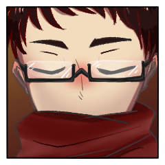

クライマックスフェイズ
GM
せせらぎを遡り、滝を登ったそのさらに上流に、
GM
清涼な気に満ち満ちた、成人の儀のための舞台。
藻
頭の先からつま先、指先まで清浄な気を纏わせて。
ただ黙したまま、水の音と一体に其処に在る。

葛火焔郎
山を分け、霧を分け。少年と青年、そのあわいの男が現れる。
煤木野灰吏
伴われて少し後ろを歩く男は、シワ一つないスーツを身にまとい。
煤木野灰吏
ただ黙って、前を行く彼の背中を見ていた。
御祀 潺
儀式の間中、通さぬように見張りをたてるものを。
御祀 潺
「では、これに至っては立ち合いではなく」
葛火焔郎
己の為にと其処に立つ者に、恨みごとは言わない。
藻
交わす視線も、言葉もない。
ただ。在るために居る。
御祀 潺
あとは只、世界のもたらす合図(きっかけ)を待つのみ。
GM
小石の滝を転がり落ちる音が、シノビたちの耳に響く。
ラウンド1
[ 御祀 潺 ] がダイスシンボルを公開。出目は 1 です。
[ 藻 ] がダイスシンボルを公開。出目は 4 です。
[ 葛火焔郎 ] がダイスシンボルを公開。出目は 2 です。
[ 煤木野灰吏 ] がダイスシンボルを公開。出目は 4 です。
GM
＊ラウンド１
プロット４：藻、灰吏
プロット２：焔郎
プロット１：潺
GM
藻と灰吏は2D6を。出目の低い方から行動していただきます。
煤木野灰吏
2d6 (2D6) ＞
5[1,4] ＞ 5
GM
処理上の問題なので、実際は同時行動として処理いたします。
GM
同時行動が発生した場合に限り、逆凪の適用がすべての行動の終了後になります。
GM
この場合、灰吏さんや藻さんが禁術や獣化でファンブルしたとしても、そのまま攻撃忍法の判定は可能になる、といったような裁定ですね。
プロット４ 行動：煤木野灰吏
煤木野灰吏
2D6>=5 （判定：罠術） (2D6>=5) ＞ 8[2,6]
＞ 8 ＞ 成功
GM
灰吏がクライマックスフェイズから脱落するか、禁術による書き換えが入るまで、神槍の使用者は使用後に接近戦ダメージを１点受けます。
煤木野灰吏
続いて魔琴を使用します。対象は潺さん。
煤木野灰吏
2D6>=5 （判定：遊芸） (2D6>=5) ＞ 7[2,5]
＞ 7 ＞ 成功
御祀 潺
■奥義
《神流：慧眼ノ法》
指定特技 ：千里眼の術
エフェクト：完全成功(判定を成功にする)/くらまし(奥義破りの判定に-2)/発動条件(生命点が3以下の時しか使用できない)
効果・演出：僅か先の未来を見て行動を最善へと導く
GM
完全成功により回避判定が成功ですね。
残りの３人に潺の奥義情報が渡ります。
煤木野灰吏
灰を散らして、鋼線が結界の内に張り巡らされる。
葛火焔郎
合図と共にまず退がる。藻の間合いに入ることを避けた。
葛火焔郎
それが仇。”いつも”ならば決してあるはずのない、妨げ。
煤木野灰吏
指を引く。鋼線自体が意思を持つかにように動いて、焔郎を締め上げる。
煤木野灰吏
そのつもりなら、この場に立ってはいない。
煤木野灰吏
「動きたくても動けないくらい、叩きのめすしかねえんだよな」
御祀 潺
動きやすいとは言えない、厚手の布が翻る。
御祀 潺
しかしそれは、一瞬を舞うシノビにとっての全て。
プロット４ 行動：藻
藻
MT 異形表(4) ＞
妖魔化している間、戦闘中、1ラウンドに使用できる忍法のコストが、自分のプロット値+3点になり、装備忍法の【揺音】を修得する。
[ 藻 ] 忍術 : 1 → 0
藻
頽れるように地に伏せる。
死者のように青白いはだに、神域の光が灯る。
藻久去鹿彌
太古より人が肉を食むさいに言葉を発することかなわぬ、沈黙の数秒を司る食肉の神 ──
藻久去鹿彌
2d6 (2D6) ＞
7[1,6] ＞ 7
GM
成功ですね。以降、藻の攻撃忍法のダメージに接近戦ダメージ１点が上乗せされます。
GM
手番の攻撃行動がまだ残っています。行動があるなら宣言を。
藻久去鹿彌
神様に成りたくて成るわけじゃない。
成ろうとしてなるわけじゃない。
藻久去鹿彌
今、こうして神に成る少女の。
精神の残り香が、ばらの香りだけを残して脱ぎ捨てられて。
藻久去鹿彌
少女だけになったからだの。
ちいさなうらみごとが。
涙のように零れてくる。
藻久去鹿彌
ヘアオイルとか。
リップクリームとか。
フラペチーノとか。
藻久去鹿彌
消えちゃうものばっかり頼んじゃったな。
藻久去鹿彌
だいじ、とか。
いっしょにいてほしい、とか。
GM
クリティカルヒット/断ち/回数制限/第六感。
GM
自らの秘密を開示し、回想シーンの演出をお願いします。
【秘密：煤木野灰吏】
あなたは葛火 焔郎が藻に執着しすぎていることを危惧している。
このまま藻への執着を保っていては、葛火 焔郎さえも藻と同じようにシノビガミとなってしまうのではないだろうか。
そう危惧したあなたは藻の家からプライズ『帝光の書』を奪った。
これを調べれば、この心配が杞憂であるかどうかが分かるはずである。
煤木野灰吏
この場に、お前の敵として立っていることも。
煤木野灰吏
お前のやりたいことを認めて、背中を押してやった方がお前は喜ぶだろうな。
煤木野灰吏
2D6+3>=7 （判定：流言の術） (2D6+3>=7) ＞
10[4,6]+3 ＞ 13 ＞ 成功
藻久去鹿彌
あの清流で師に見せたものとは。
一線を画すほどの荒々しさ。
藻久去鹿彌
一切研ぎ澄まされていない。
暴力的な角の一撃。
藻久去鹿彌
神魔をわけるものはなんなのか。
ただここに人の糸に絡めとられる神は。
プロット２ 行動：葛火焔郎
葛火焔郎
絡め取られた腕を動かす。筋肉を引き裂く鋼線をものともせず。
GM
【鬼影】ゆえ、【神槍】の判定には-2がつくので注意してください。
葛火焔郎
2D6>=6 陽炎（判定：骨法術） (2D6>=6) ＞ 7[1,6]
＞ 7 ＞ 成功
葛火焔郎
2D6-2+1>=5 （判定：手裏剣術） (2D6-2+1>=5) ＞
10[5,5]-2+1 ＞ 9 ＞ 成功
藻久去鹿彌
2D6>=6 （判定：手練） (2D6>=6) ＞
5[1,4] ＞ 5 ＞ 失敗
[ 藻久去鹿彌 ] 頑健 : 2 → 0
[ 藻久去鹿彌 ] 体術 : 1 → 0
GM
悩むところですが、禁術の対象はシーンだからGMが振ります。
[ 葛火焔郎 ] 妖術 : 1 → 0
GM
プロット２の処理はこれにて終了ですね。演出を。
[ 葛火焔郎 ] 忍術 : 1 → 0
葛火焔郎
ブヂ、と筋肉が嫌な音を立てるのが分かる。
葛火焔郎
駆け出す足は影。瞳は真っ直ぐに、華奢な少女を見つめて。
葛火焔郎
振り返りもしない。視線を遣ることもない。
藻久去鹿彌
糸に絡めとられた角が傾いで、骨の脚がもつれる。
葛火焔郎
おまえが神様になんかなりたくないって言うんなら
藻久去鹿彌
─ そも、この神は初めから。
ただ名もなき神に捧げられた贄だったのではないか。
藻久去鹿彌
それを人々が。
神としただけなのではないか。
藻久去鹿彌
冠された少女が神の臓腑に収まり。
ただ、何かを待っている。
プロット１ 行動：御祀潺
御祀 潺
MT 異形表(1) ＞
1D6を振り、「妖魔忍法表A」で、ランダムに忍法の種類を決定する。妖魔化している間、その妖魔忍法を修得しているものとして扱う。この異形は、違う種類の妖魔忍法である限り、違う異形として扱う。
妖魔忍法表A ＞ 【夜雀】(怪p.252)
[ 御祀 潺 ] 体術 : 1 → 0
御祀 潺
己に下ろすことのできなかった完全なる神。
御祀 潺
彼女は今頃、学校に行き、友人とフラペチーノを手に笑いあっていたのかもしれない。
御祀 潺
立ち込める霧の中、全身から獣の毛が伸びる。
御祀 潺
穢れを受けたその身に、触れる資格はなかろうとも。
GM
ラウンド終末です。脱落者も忍法もないでしょう。
GM
ダイス目を隠し、次のプロットへと変更し、秘話にてGMへと申告してください。